01
Telhados
Impermeabilização do telhado sem trocá-lo, eliminando também a temperatura alta do ambiente.
Impermeabilização · Mauá-SP
A Imperllaje Impermeabilizações e Pinturas Prediais é especializada em serviços de impermeabilização e isolação térmica, executando serviços para condomínios, indústrias, construtoras e residências, sejam obras novas ou reformas.
Há mais de 12 anos solucionando problemas de infiltrações e vazamentos.
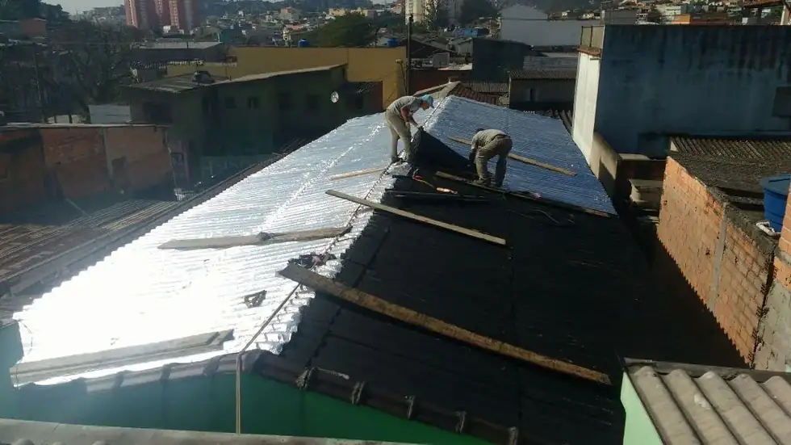
Onde a água entra
São os quatro serviços que a Imperllaje lista: telhados, lajes, calhas e sacadas. A empresa trabalha em obras novas e em reformas.
01
Impermeabilização do telhado sem trocá-lo, eliminando também a temperatura alta do ambiente.
02
Aplicação de manta asfáltica em laje, em obra nova ou em reforma de cobertura já existente.
03
Tratamento da calha e do rufo, por onde a água do telhado inteiro passa antes de escoar.
04
Impermeabilização de sacadas e das demais áreas expostas da edificação.
“Solucionamos o seu problema de infiltração sem trocar o telhado, eliminando a temperatura alta do ambiente e uma garantia de (5) cinco anos.”
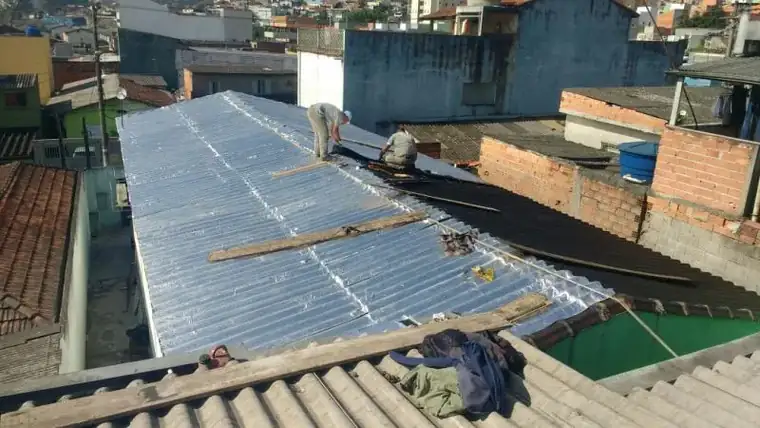
Produtos em destaque
São os quatro sistemas que a empresa destaca no próprio site, além de isolação térmica e pintura predial.
Como trabalhamos
A Imperllaje possui em seu corpo técnico operários com larga experiência na área. Os funcionários são treinados para trabalhar em edificações já habitadas ou não, como condomínios e residências.
Quem chama a Imperllaje
Fabricantes com quem trabalham
Fabricantes de produtos impermeabilizantes que seguem as rígidas normas brasileiras. A atuação em conjunto com os fornecedores visa garantir ao cliente conhecer o corpo técnico dos fabricantes.
O que a empresa declara entregar
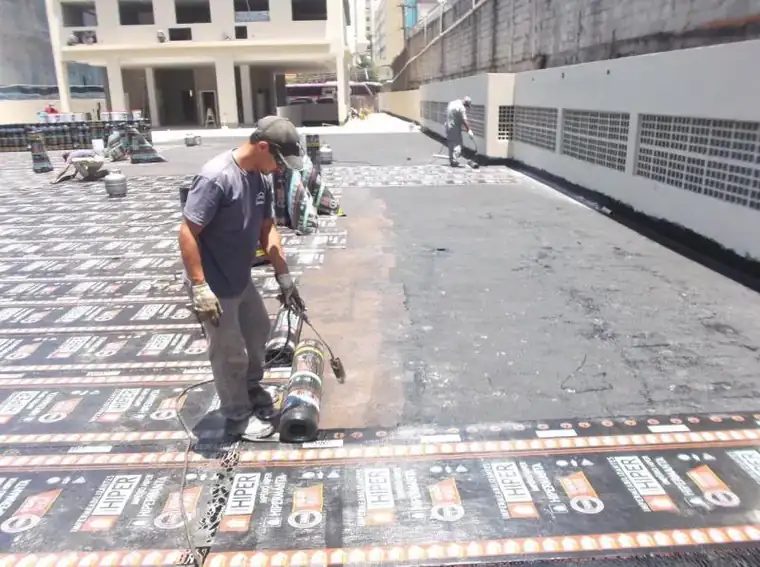
Galeria de fotos
As mesmas fotos publicadas pela empresa na galeria do site dela.
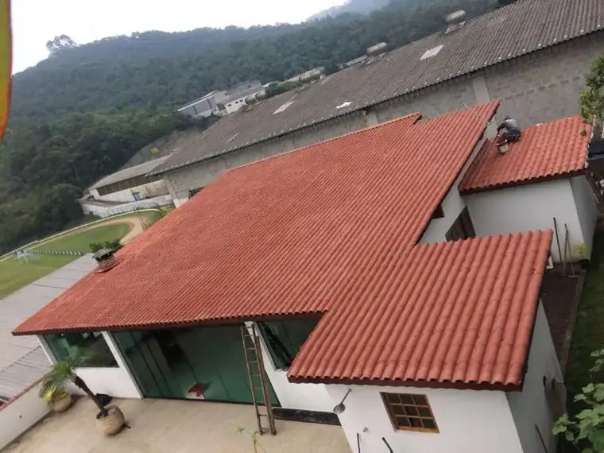
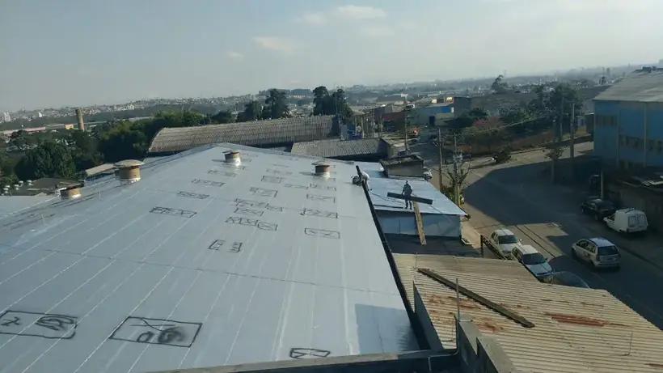
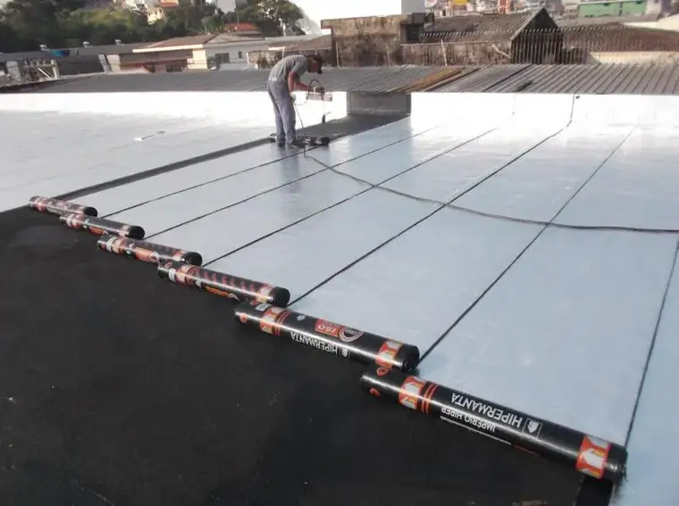
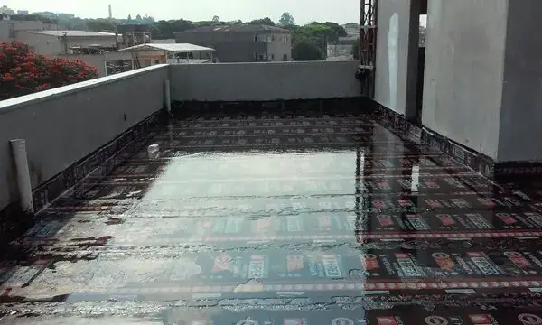
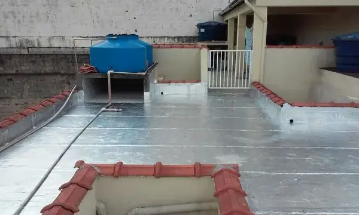
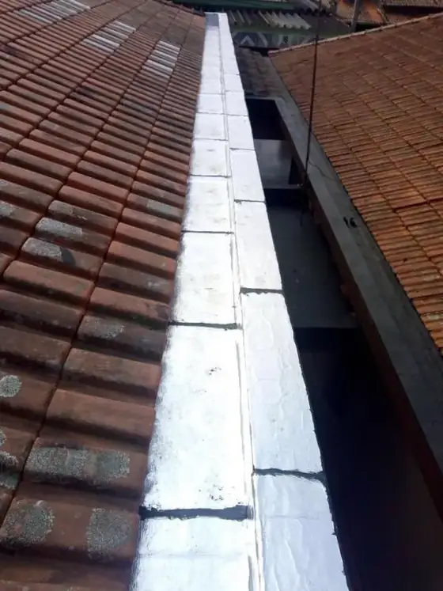
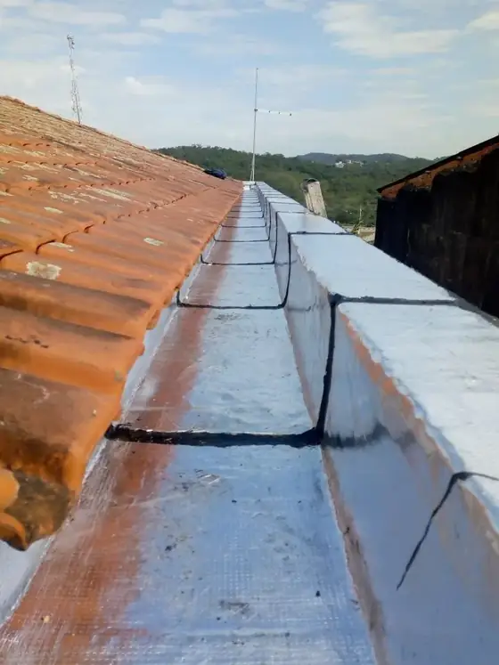
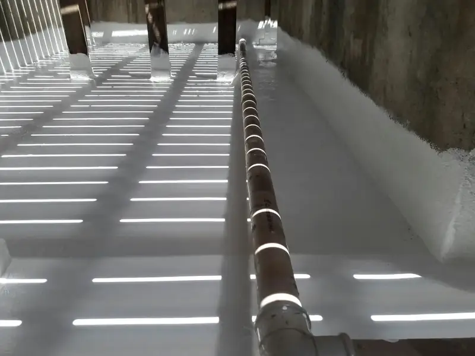
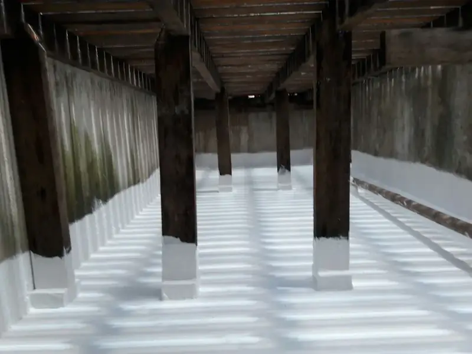
Fotos publicadas pela Imperllaje Impermeabilizações.
Vistoria e orçamento
A empresa se coloca à disposição para fornecer informações sobre os serviços, esclarecer dúvidas, receber sugestões e agendar vistorias.
Contato
Responder seu e-mail será uma grande satisfação para nós.
Rua Cecília Meireles, 412 — Jardim Miranda D'Aviz, Mauá-SP — CEP 09330-540
Atendemos toda a Grande São Paulo, capital e interior. Consulte também sobre outras localidades.